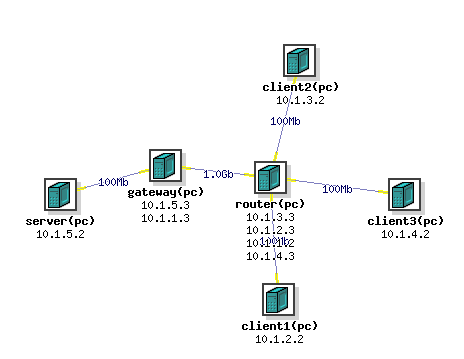

OverviewThis exercise lets students practice monitoring network for denial-of-service attacks and devising appropriate actions. Students will be divided into 3-4 person teams. Each team will play the defender role (Blue team) for their own system and the attacker role (Red team) for another team's system. Each network in the exercise will consist of six machines - a server and a gateway machine under the control of the Blue Team, three client machines under the control of the Red Team and a router machine that neither team controls. Links between clients and the router and the link between the gateway and the server are 100 Mbps. The link between the gateway and the router is 1 Gbps. This allows the clients to attempt to create DoS conditions by flooding the link between the gateway and the server. The network for the exercise is shown below and the NS file for it resides at /share/education/ResilientServer_USC/cctf.ns.  Blue Team TasksThis team will control the server and the gateway machine, connected by 100 Mbps link. The server should be a classical Web server, which you can install by typing: sudo apt-get update sudo apt-get install apache2The server should be able to serve 10 static Web pages, whose names should be: 1.html 2.html 3.html 4.html 5.html 6.html 7.html 8.html 9.html 10.htmlThe Blue team can make up the content on these pages. The Blue team should also develop a monitoring program for the gateway machine and for the server so that they can quickly spot if the Red team launches denial-of-service and so that they can defend from it. One way to defend from it is to implement some filtering at the gateway machine via iptables. Blue team should be ready to implement filtering on the fly but they should develop a sophisticated monitoring program that helps them quickly figure out what to filter. The Blue team can also modify Apache's configuration and code to make the server more resilient to some attacks, or they can craft packets to end connections that behave suspiciously (e.g., TCP RST).
Make sure you understand how iptables command works before you use it as you may cut off your access to a given machine in DeterLab if you filter out some specific traffic to/from it, e.g., all outgoing traffic. The only way to recover from this is to reboot the machine using Web portal for DeterLab. Click on your Experiment, then click on the machine's name in the Node List (e.g., pc133) and then choose "Reboot node" from the top left menu. It usually takes 5-10 minutes for the machine to come up again.
The goal of the Blue team is to keep the server up and running. When the server gets attacked, the Blue team should strive to bring it back up quickly (if it is down) and to install filters to get rid of attack traffic. When developing and practicing swap in an experiment using /share/education/ResilientServer_USC/cctf.ns file. This will lead to the identical setup as the one during CCTF exercise. Assumptions and RequirementsYou can borrow code from online sources but you need to understand what it does and how. MilestonesHere are some milestones that your team must reach BEFORE the exercise.
Red Team TasksThe Red Team will have control over the three client machines. They should program one of those to send only legitimate traffic, and two can be used for various attacks. Only the Red Team will know which machine is legitimate. The legitimate client machine must:
The goal of the Red Team is to make the server unable to serve its legitimate client, either through compromise or through denial of service. Any attack is allowed, not just denial of service, even breaking Blue team's passwords. When developing and practicing swap in an experiment using /share/education/ResilientServer_USC/cctf.ns file. This will lead to the identical setup as the one during CCTF exercise. Assumptions and RequirementsYou can borrow code from online sources but you need to understand what it does and how. MilestonesHere are some milestones that your team must reach BEFORE the exercise.
ScoringThe Blue Team receives a point for each legitimate client's request that the server processes and responds to within 500 ms. Red Team gets the point otherwise.Exercise DynamicsTeams will need to simultaneously act as Blue Team and Red Team throughout the 2h exercise. We will then have a 10 min break followed by a post-mortem discussion and selection of a winning team.GradingEach team member will be graded based on their contribution to the team effort, not based on the team's performance. After the exercise each team member will submit a report containing the list of contributions they made to the team effort - e.g., modules that they coded, testing and setup they performed, etc. All team members must sign each report. Reports will be delivered to the instructor in class. The grades will be assigned based on the report.Useful LinksYou can use any programming language you like for any part of your assignment.
|